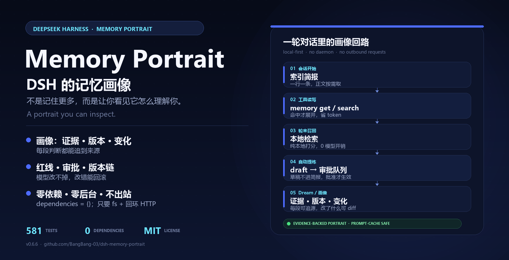

画像有证据
每段挂来源记忆或当天日志；源被删、被归档、被改写时，沿派生链标脏。
DEEPSEEK HARNESS · WORKSPACE MEMORY
不是记住更多，而是让你看见它怎么理解你。
会话开始注入索引简报，轮末本地召回，可选自动提炼。画像的每段都有证据、版本和 diff；写错了有红线、审批、版本链和注入审计。
dsh plugin --profile web add @bangbang-03/dsh-memory
DSH ≥ 0.2.0-rc.2 · web / 桌面 · npm 包名保持不变
581 tests · 0 dependencies · MIT · v0.6.7

WHY A PORTRAIT
Memory Portrait 把「它现在怎么理解你」放在首页：每段判断从哪来、改了什么、为什么变。
每段挂来源记忆或当天日志；源被删、被归档、被改写时，沿派生链标脏。
画像是版本化对象；改了什么可 diff，推翻不删除，旧版一直留着。
绝对禁令逐字置顶；删除或改稿只能在面板确认；自动提炼可先进审批队列。
正文 hash、命中的记忆 id、被预算挤掉的条目都留档；不是黑盒。
索引简报一行一条；会话级冻结、字节稳定，不因记忆更新打掉 prompt 前缀缓存。
dependencies 为空；不 shell、不 env、不启子进程、不发网络请求。
WHAT IT DOES
会话简报、memory 工具、轮末召回、路径 JIT、自动提炼；Dream 负责合并与报告矛盾，画像负责让你看见变化。
OPEN SOURCE · MIT
GitHub 上点个 ⭐，或者直接开一个 issue 说说你的工作流。